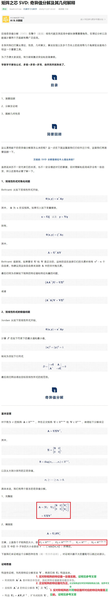
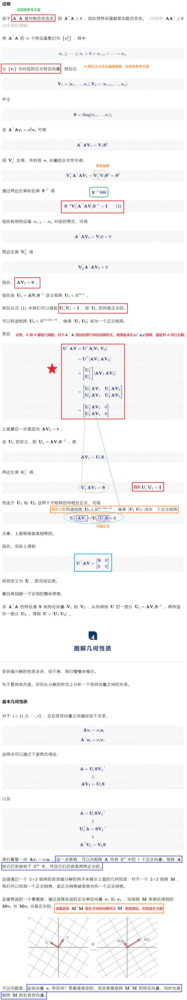
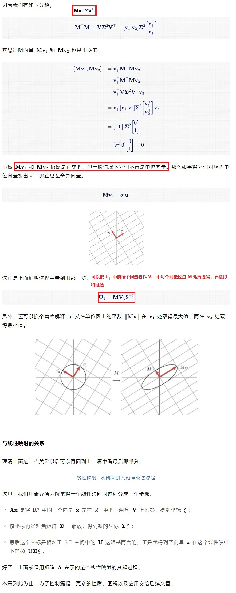

在网上看到一篇非常好的关于 SVD 的文章，转载在这里。并附上自己的理解。
原文来源: 矩阵之芯 SVD: 奇异值分解及其几何解释



参考文章
实对称矩阵的特征值一定为实数证明
证明：实对称矩阵中，属于不同特征值的特征向量相互正交
设 Ap=λ1p, Aq=λ2q，其中 A 为实对称矩阵，λ1, λ2 为 A 的不同的特征值，p 和 q 分别是对应的特征向量。
pT(Aq)=pT(λ2q)=λ2pTq(1)
(pTA)q=(pTAT)q=(λ1p)Tq=λ1pTq(2)
因为 pT(Aq)=(pTA)q, 由 (1)-(2)得：
pT(Aq)−(pTA)q=(λ1−λ2)pTq
即 0=(λ1−λ2)pTq
又由于 λ1=λ2，所以 pTq=0, 即 <p,q>=0, 从而 p 与 q 相互正交。
所有特征值大于零的矩阵一定是正定阵吗？
ATA 是对称且非负定的。
证明：(ATA)T=ATA, 因此对称。
xT(ATA)x=(Ax)TAx=∥Ax∥>=0
矩阵乘矩阵的转置一定正定吗